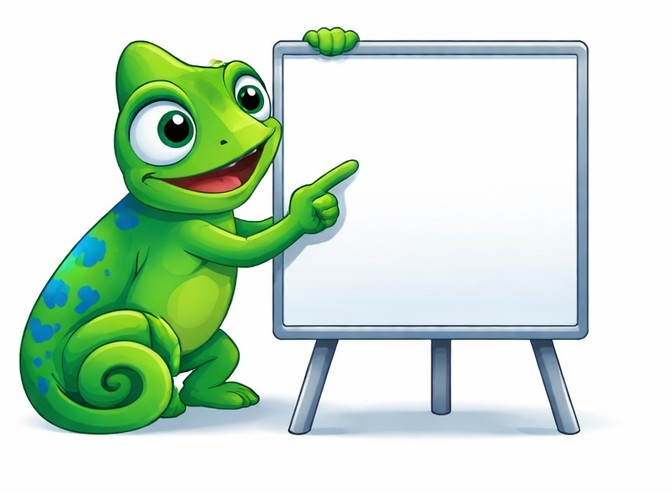
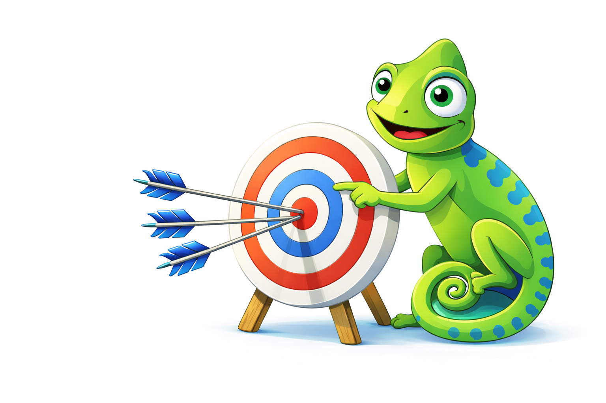

A Kadan desenvolve sistemas personalizados para aumentar a eficiência, controle e crescimento dos negócios.
Adaptar, integrar e transformar com soluções digitais sob medida.
Transformar desafios de gestão em soluções digitais que aumentam produtividade, reduzem custos e trazem mais controle para as empresas.
Ser referência em sistemas personalizados que impulsionam a transformação digital e o crescimento das empresas.

A Kadan tem como símbolo o camaleão porque ele representa exatamente o que fazemos na prática: adaptação inteligente.
Cada empresa tem sua própria realidade — processos, cultura, regras e urgências — e a nossa tecnologia acompanha tudo isso de forma estratégica.
Assim como o camaleão se ajusta ao ambiente, a Kadan desenvolve e evolui sistemas que se encaixam no seu fluxo de trabalho, em vez de obrigar você a mudar toda a operação.
Nosso mascote não é apenas um detalhe visual: ele simboliza a nossa essência — promover transformação real no ritmo da sua empresa.
A Kadan se posiciona como parceira técnica de transformação, especializada em desenvolver sistemas que se moldam ao seu cenário e resolvem o que trava a operação.
Dessa forma não entregamos software genérico. Cada projeto é único, pensado para resolver os desafios reais do seu negócio.
Na prática isso significa:
